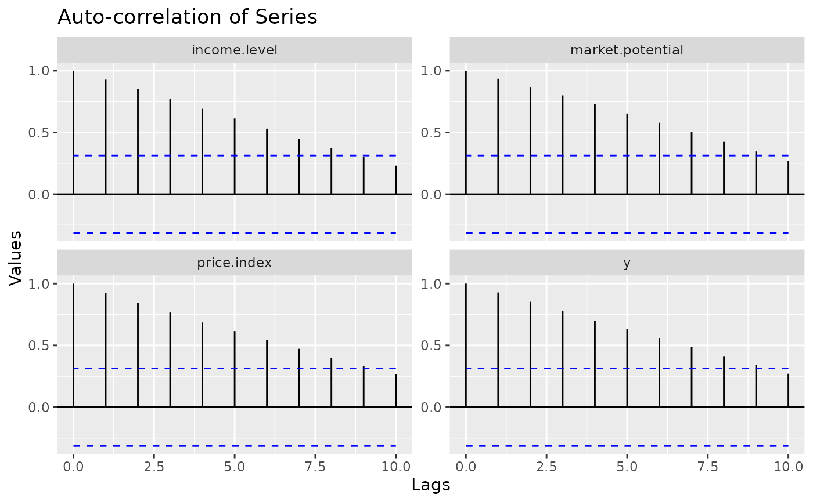
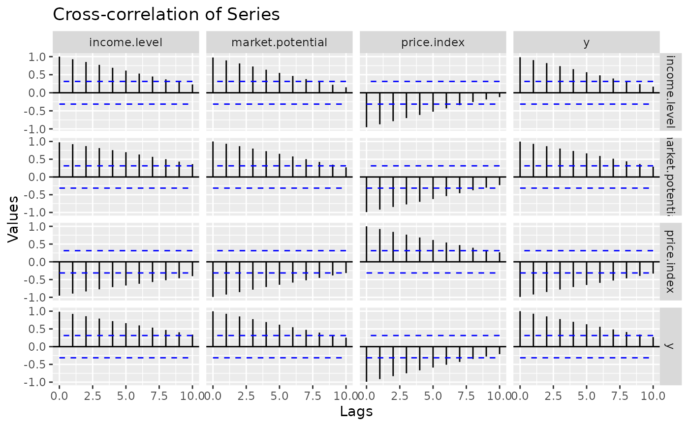
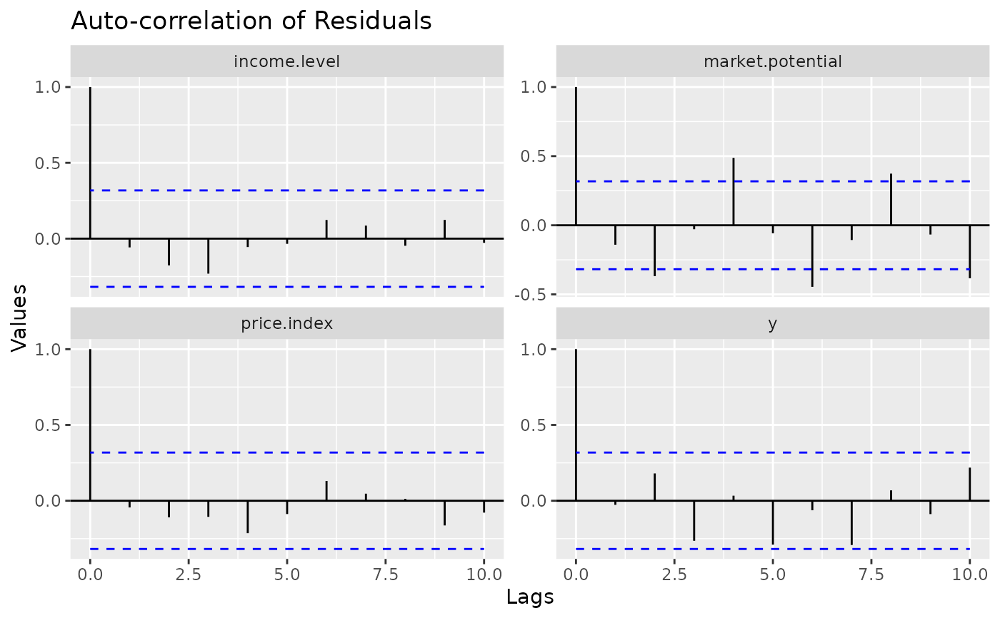

ggvar_acf plots the result of a acf call for every series, using ggplot and facet_wrap. ggvar_ccf plots all the cross correlations (and similars) between the series, using ggplot in a matrix fashion with facet_grid.
Usage
ggvar_acf(
x,
type = "correlation",
lag.max = NULL,
ci = 0.95,
geom = "segment",
facet = "ggplot",
palette = c("black", "black", "blue", NA),
scales = "fixed",
ncol = 1,
...
)
ggvar_ccf(
x,
type = "correlation",
lag.max = NULL,
ci = 0.95,
facet = "ggplot",
geom = "segment",
palette = c("black", "black", "blue", NA),
scales = "fixed",
independent = "y",
...
)Arguments
- x
A dataset (object coercible to data.frame) or a "varest" object to get residuals from.
- type
The type of ACF to be computed, passed to acf. Can be either "correlation", "covariance", or "partial".
- lag.max
The number of lags used to calculate the ACF, passed to acf. defaults to
ceiling(10 * log(nrow(data) / ncol(data), base = 10)).- ci
The level of confidence for the ACF confidence interval. Set to
FALSEto omit.- geom
The ggplot geom used to create the plot, "segment" for geom_segment (the default) or "area" for geom_area.
- facet
The facet "engine" to be used. "ggplot2" for facet_grid, "ggh4x" for facet_grid2.
- palette
A vector of colors (bins, normal curve). See
vignette("palettes").- scales
"fixed" (the default), "free", "free_x" or "free_y". passed to facet_wrap.
- ncol
An interger. The number of facet columns, passed to facet_wrap.
- ...
Aditional arguments passed to the ggplot geom defined by
geom.- independent
For varying the scales of each cell. See facet_grid2.
Examples
ggvar_acf(EuStockMarkets)

ggvar_ccf(EuStockMarkets)

ggvar_acf(vars::VAR(EuStockMarkets))
